Assignments
This page contains all of my assignments for the class.
Assignment 1
Collaborators: Tori Borlase and Halle Wasser.
Problem 1
Install the datasets package on the console below using install.packages("datasets"). Now load the library.
# install.packages('datasets')
library(datasets)Now, it’s installed!
Load the USArrests dataset and rename it dat. Note that this dataset comes with R, in the package datasets, so there’s no need to load data from your computer. Why is it useful to rename the dataset?
dat <- USArrestsAnswer: It is useful to rename the dataset because it allows for replication. Renaming the dataset serves essentially the same function as “Save as” on a word document, which allows you to save the current version separately and still have access to previous versions. In other words, renaming the dataset allows you to perform functions without contaminating the original data.
Problem 2
Use this command to make the state names into a new variable called State.
dat$state <- tolower(rownames(USArrests))Now, the state names have become a new variable (called “state”)
This dataset has the state names as row names, so we just want to make them into a new variable. We also make them all lower case, because that will help us draw a map later - the map function requires the states to be lower case.
List the variables contained in the dataset USArrests.
names(dat)## [1] "Murder" "Assault" "UrbanPop" "Rape" "state"Answer: The variables contained in the dataset are Murder, Assualt, UrbanPop (Urban Population), Rape, and state.
Problem 3
What type of variable (from the DVB chapter) is Murder?
Answer: According to the DVB chapter, Murder is a quantitative variable because it measures how many murder arrests were made per 100,000 people.
What R Type of variable is it?
class(dat$Murder)## [1] "numeric"Answer: By using the class() function, we find that Murder is a numeric variable in R.
Problem 4
What information is contained in this dataset, in general? What do the numbers mean?
head(dat)## Murder Assault UrbanPop Rape state
## Alabama 13.2 236 58 21.2 alabama
## Alaska 10.0 263 48 44.5 alaska
## Arizona 8.1 294 80 31.0 arizona
## Arkansas 8.8 190 50 19.5 arkansas
## California 9.0 276 91 40.6 california
## Colorado 7.9 204 78 38.7 coloradoAnswer: Firstly, it’s important to note that this data was collected/released in 1973. In general, information about how many arrests were made for murder, assault, and rape per 100,000 people in each state is contained in this dataset. This dataset also contains the percentages of the population that reside in urban areas within each state. Although this data set is just a data set that comes with R and is generally used for practice, it teaches beginners to be sensitive about the analyses that they conduct using R. In this case specifically, the data points are not just numbers; rather, they represent people in the real world that were arrested for specific crimes. Thus, this data teaches us to be cognizant of the conclusions and inferences that are drawn from our calculations/analyses.
Problem 5
Draw a histogram of Murder with proper labels and title.
hist(dat$Murder, main = "Frequency of Murder Arrest Rates in the United States (1973)",
xlab = "Murder Arrests per 100,000", border = "black", col = "blue",
xlim = c(0, 20))
Problem 6
Please summarize Murder quantitatively. What are its mean and median? What is the difference between mean and median? What is a quartile, and why do you think R gives you the 1st Qu. and 3rd Qu.?
summary(dat$Murder)## Min. 1st Qu. Median Mean 3rd Qu. Max.
## 0.800 4.075 7.250 7.788 11.250 17.400Answer: The mean and median of “Murder” are 7.788 and 7.250, respectively. The minimum value is .800, Q1 is 4.075, Q3 is 11.250, and the maximum is 17.400. The mean is the average of all the data points (i.e. the sum of all the data values divided by the number of values). The median is the middle value when the data is arranged in order and it provides information regarding robustness. A quartile is a type of quantile that divides the data set into 4 (roughly) equally-sized parts (i.e. quarters) when the data is arranged from smallest to largest value. Therefore, quartiles serve to measure the spread of values in a given data set (these quartiles include 25%, 50%, 75% and 100%). R only gives us the 1st and 3rd quartiles because the 2nd quartile is the same as the median. As you can see in the output above, the value associated with 50% is the same as the median (because 50% of the values in the data set are above [and below] this value).
Problem 7
Repeat the same steps you followed for Murder, for the variables Assault and Rape. Now plot all three histograms together. You can do this by using the command par(mfrow=c(3,1)) and then plotting each of the three.
# Assault
summary(dat$Assault)## Min. 1st Qu. Median Mean 3rd Qu. Max.
## 45.0 109.0 159.0 170.8 249.0 337.0For assault arrests, the minimum value is 45.0, the maximum value is 337.0, the median is 159.0, and the mean is 170.8. Furthermore, Q1 is 109.0 and Q3 is 249.0.
# Rape
summary(dat$Rape)## Min. 1st Qu. Median Mean 3rd Qu. Max.
## 7.30 15.07 20.10 21.23 26.18 46.00For rape arrests, the minimum value is 7.30, the maximum value is 46.00, the median is 20.10, and the mean is 21.23. Furthermore, Q1 is 15.07 and Q3 is 26.18.
par(mfrow = c(3, 1))
hist(dat$Murder, main = "Frequency of Murder Arrest Rates in the United States (1973)",
xlab = "Murder Arrests per 100,000", border = "black", col = "Purple")
hist(dat$Assault, main = "Frequency of Assault Arrest Rates in the United States (1973)",
xlab = "Assault Arrests per 100,000", border = "black", col = "Red")
hist(dat$Rape, main = "Frequency of Rape Arrest Rates in the United States (1973)",
xlab = "Rape Arrests per 100,000", border = "black", col = "Green")What does the command par do, in your own words (you can look this up by asking R ?par)?
Answer: The R command ‘par’ is used to modify how graphs are displayed, allowing plots to be combined into one cohesive graph. For specifically, ‘par’ gives the program parameters to plot it a certain way and then ‘mfrow’ puts it into an array. In this case, the array has 3 rows and 1 column, as denoted in the line of code.
What can you learn from plotting the histograms together?
Answer: By plotting the histograms together, we can learn quite a few things because the distributional differences are displayed very clearly. Firstly, we notice that the number of assault arrests per 100,000 people is significantly higher than both that of murder arrests and rape arrests. Furthermore, we notice that histograms for Rape Arrests and Murder Arrests are unimodal and right-skewed (albeit to different degrees) whereas the histogram for Assault Arrests is closer to a bimodal distribution.
Problem 8
In the console below (not in text), type install.packages("maps") and press Enter, and then type install.packages("ggplot2") and press Enter. This will install the packages so you can load the libraries.
Run this code:
# install.packages('maps')
# install.packages('ggplot2')
library(maps)
library(ggplot2)
ggplot(dat, aes(map_id = state, fill = Murder)) + geom_map(map = map_data("state")) +
expand_limits(x = map_data("state")$long, y = map_data("state")$lat)
What does this code do? Explain what each line is doing.
Answer is shown below. (Unfortunately, it would not allow me to fix the display of the comments next to each line, so if there is difficulty understanding which portion is code and which portion is my explanation, please let me know).
# install.packages('maps') this installs the maps package,
# which allows the program to draw geographical maps.
# install.packages('ggplot2') this installs the ggplot2
# program, which allows the program to create elegant data
# visualizations using the Grammar of Graphics. In other
# words, it allows for very complex plots/graphics to be
# created within a data frame.
# library(maps) this line loads the newly-installed 'maps'
# package
# library(ggplot2) this line loads the newly-installed
# 'ggplot2' package
# ggplot(dat, aes(map_id=state, fill=Murder)) +
# geom_map(map=map_data('state')) +
# expand_limits(x=map_data('state')$long,
# y=map_data('state')$lat)
# this long line of code reflects the 3 fundamental parts
# of the ggplot: data, aesthetics, and geometry. The first
# parameter tells the program to use the 'dat' dataset. It
# then tells the program to use the Murder data from 'dat'
# and the new 'state' variable that we create in Problem 2
# to create the aesthetic element of the plot. Together, it
# uses essentially signals that the mapping aesthetic
# layout should be based on the state variable while the
# color of each state (i.e. the respective shade of blue)
# is determined by the value associated with the number of
# murder arrests. The last part of this line of code
# indicates that the x and y limits of the plot should
# reflect the latitude and longitude values of the states.
# Collectively, each portion of this line of code plays a
# role in displaying a colorful map of the United States,
# whether different shades of blue represent different
# numbers of Murder arrests across the United States in
# 1973.\[\\[2in]\]
Assignment 2
Problem 1: Load data
Set your working directory to the folder where you downloaded the data.
setwd("/Users/theoathanitis/Desktop/CRIM 250/data sets")Read the data
dat <- read.csv(file = "dat.nsduh.small.1.csv")What are the dimensions of the dataset?
dim(dat)## [1] 171 7There are 171 rows and 7 columns in this dataset. Checking this is good practice because we want to make sure that we are working with the entire dataset that we intended. In other words, had Dr. Cuellar given us the entire dataset, we would expect to have tens of thousands of rows instead.
Problem 2: Variables
Describe the variables in the dataset.
names(dat)## [1] "mjage" "cigage" "iralcage" "age2" "sexatract" "speakengl"
## [7] "irsex"The variables in this dataset are “mjage”, “cigage”, “iralcage”, “age2”, sexatract”, speakengl”, and “irsex”.
The variables included in this dataset are just a select few from a national survey. The variable “mjage” denotes how old the individual was when they first used marijuana or hashish. “mjage” is a discrete (quantitative) variable.
The variable “cigage” denotes how old the individual was when they first started smoking cigarettes every day. “cigage” is a discrete (quantitative) variable.
The variable “iralcage” denotes how old the individual was when he/she first tried alcohol. “iralcage” is a discrete (quantitative) variable.
For the abovementioned variables (“mjage”, “cigage”, and “iralcage”), there are some interesting aspects of the variable coding. For all 3, bad data, having never used marijuana, not knowing the answer, refusing to answer, or leaving the question blank were logged as 985, 991, 994, 997, and 998, respectively. For the “cigage” variable, 999 was used in place of a legitimate skip, in which the individual had used cigarettes before, but had never used them everyday.
The variable “age2” is the final age variable that incorporates both the individual’s raw birthdate and changes to their age based on consistency checks throughout their responses. This variable also takes into account factors such as the age they entered on the roster, their pre-interview screener age and the final edited interview date. It is important to note that the age2 variable is a categorical variable because although some categories are representative of a specific age, other categories are indicative of age groups that span across 2+ ages. The age variable is interesting because it highlights the steps taken to protect the privacy and identity of individuals. Although it would have been possible to report this information as a quantitive variable, there may be very few members of certain groups, allowing someone to narrow down and find the individual that the data is referring to (for instance, 57 years old, in Tennessee, that self-identify as gay and that have smokes marijuana). Thus, age is reflected as a categorical variable in the dataset to protect confidentiality.
The “irsex” variable denotes the participant’s gender. More specifically, however, this is imputation revised gender. “irsex” is a nominal (categorical) variable.
The variable “sexatract” is essentially just the participant’s sexual orientation. This variable is a nominal (categorical) variable.
The variable “speakengl” is a measure of how well the participant speaks english. This variable is an ordinal (categorical) variable.
For these last 2 variables (“sexatract” and “speakengl”), here are some interesting aspects of the variable coding. For both, bad data, not knowing the answer, refusing to answer, and leaving the question blank were logged/coded as 85, 94, 97, and 98, respectively. For “sexattract”, 99 was used to indicate a legitimate skip.
What is this dataset about? Who collected the data, what kind of sample is it, and what was the purpose of generating the data?
ANSWER: The dataset is about drug use; more specifically, the subset of the dataset that we use in this assignment relates to marijuana, cigarette, and alcohol use. The NSDUH is conducted by the Substance Abuse and Mental Health Services Administration, which is an agency within the U.S. Department of Health and Human Services. This sample was a stratified random sample. This type of sample is useful because inferences can be made such that they are generalizable to the general population of interest. According to the agency, the purpose of generating this data is to monitor the nature, extent, and consequences of substance use in the US. In doing so, the SAMHSA uses this data to focus on the nation’s abuse treatment and prevention programs.
Problem 3: Age and gender
What is the age distribution of the sample like? Make sure you read the codebook to know what the variable values mean.
countsage <- table(dat$age2)
barplot(countsage, main = "Age Distribution", xlab = "Age Category",
ylab = "Frequency", xlim = c(0, 17), border = "black", col = "blue")
Answer: The distribution of age is left skewed. However, since age is reflected in the categorical variable “age2” we would expect to see more people in categories that include a range of ages than in categories of a single age. For instance, category 14 represents individuals between the ages of 30 and 34 whereas category 6 includes only individuals that are 17 years old. Thus, this skew may simply be a consequence of differently sized categories, rather than being reflective of the actual shape of the distribution.
Do you think this age distribution representative of the US population? Why or why not?
ANSWER: No, I do not think that the age distribution in this sample is representative of the US population. In 2019, the distribution of age in the United States is reflected in the Statista graph attached below (not shown on this website). In the data sample, less than 7% of the participants were 65 years or older, which is significantly less than the US population as a whole. It’s also important to note that there are no respondents below the age of 15, even though there are plenty of individuals in the US below this age. However, it makes sense that they are not asked to complete the survey because any data on them would be relatively useless since not many individuals below that age use drugs. Furthermore, the distribution of age in the overall population seems (relatively) uniform, but the age distribution of the sample has a far more pronounced peak (mode). The age distribution of the sample population shows that the vast majority of individuals were between the ages of 35 and 49. I would like to ground this observation in the fact that this was the National Survey of Drug Use and Health, so it would make sense that the target of this survey is within this age range given that these individuals are the most likely to be drug users.
Is the sample balanced in terms of gender? If not, are there more females or males?
table(dat$irsex)##
## 1 2
## 91 80countsgender <- table(dat$irsex)
barplot(countsgender, main = "Gender Distribution", xlab = "Gender Category",
ylab = "Frequency", xlim = c(0, 2), border = "black", col = "blue",
names.arg = c("Male", "Female"))Answer: The sample is not balanced in terms of gender because there are fewer females than males (91 males and 80 females).
Use this code to draw a stacked bar plot to view the relationship between sex and age. What can you conclude from this plot? tab.agesex <- table(dat\(irsex, dat\)age2) barplot(tab.agesex, main = “Stacked barchart”, xlab = “Age category”, ylab = “Frequency”, legend.text = rownames(tab.agesex), beside = FALSE) # Stacked bars (default)
tab.agesex <- table(dat$irsex, dat$age2)
barplot(tab.agesex, main = "Sex and Age", xlab = "Age Category",
ylab = "Frequency", legend.text = c("Male", "Female"), xlim = c(0,
18), beside = FALSE)
Problem 4: Substance use
For which of the three substances included in the dataset (marijuana, alcohol, and cigarettes) do individuals tend to use the substance earlier?
summary(dat$mjage)## Min. 1st Qu. Median Mean 3rd Qu. Max.
## 7.00 14.00 16.00 15.99 17.50 35.00summary(dat$cigage)## Min. 1st Qu. Median Mean 3rd Qu. Max.
## 10.00 15.00 17.00 17.65 19.00 50.00summary(dat$iralcage)## Min. 1st Qu. Median Mean 3rd Qu. Max.
## 5.00 13.00 15.00 14.95 17.00 23.00par(mfrow = c(3, 1))
hist(dat$mjage, main = "Age and Marijuana Use", xlab = "Age of First Use",
border = "black", col = "Purple", xlim = c(0, 50), ylim = c(0,
50), breaks = 20)
hist(dat$cigage, main = "Age and Cigarette Use", xlab = "Age of Daily Use",
border = "black", col = "Green", xlim = c(0, 50), ylim = c(0,
50), breaks = 20)
hist(dat$iralcage, main = "Age and Alcohol Use", xlab = "Age of First Use",
border = "black", col = "Blue", xlim = c(0, 50), ylim = c(0,
50), breaks = 20)
As shown above, individuals tend to use alcohol earlier. This is verified by the fact that there were a couple participants that first drank alcohol at 5 years of age (the exact number of people that responded with specific ages can be found by using the table() function, but I felt that it would be redundant to include here).
Problem 5: Sexual attraction
What does the distribution of sexual attraction look like? Is this what you expected?
par(mfrow = c(1, 1))
dat1 <- dat[dat$sexatract != 85, ]
dat2 <- dat1[dat1$sexatract != 94, ]
dat3 <- dat2[dat2$sexatract != 97, ]
dat4 <- dat3[dat3$sexatract != 98, ]
dat5 <- dat4[dat4$sexatract != 99, ]
countsexattract <- table(dat5$sexatract)
barplot(countsexattract, main = "Sexual Attraction Distribution",
xlab = "Sexual Attraction Category", ylab = "Frequency",
border = "black", col = "pink")
ANSWER: First, I’d like to note that I went through the steps of taking out every possible missing data option just in case. In most instances, a statistician may choose to take fewer steps by first looking at the dataset and establishing which “special cases” are present that need to be removed before analyzing the data.
As shown in the bar plot above, the distribution is largely skewed to the right, such that most participants are only attracted to the opposite sex. This is definitely what I expected given that the vast majority of participants in this survey were part of an older generation that, historically, is less accepting of same sex (or LGBTQ+) attraction.
What is the distribution of sexual attraction by gender?
tab.sexorient <- table(dat5$irsex, dat5$sexatract)
barplot(tab.sexorient, main = "Sexual Orientation and Gender",
xlab = "Sexual Orientation Category", ylab = "Frequency",
legend.text = c("Male", "Female"), xlim = c(0, 7), ylim = c(0,
150), beside = FALSE)table(dat5$sexatract, dat5$irsex)##
## 1 2
## 1 82 54
## 2 3 13
## 3 0 9
## 4 1 2
## 5 2 1
## 6 1 0The distribution of sexual attraction by gender is shown above Based on the figure below, it is notable that more males assert that they are only attracted to the opposite gender, whereas females often respond in a bi-curious nature (as exemplified by the fact that all of the participants that responded with being equally attracted to both genders were female).
Problem 6: English speaking
What does the distribution of English speaking look like in the sample? Is this what you might expect for a random sample of the US population?
table(dat$speakengl)##
## 1 2 3
## 161 8 2countspeakengl <- table(dat$speakengl)
barplot(countspeakengl, main = "English Speaking Distribution ",
xlab = "English Speaking Category", ylab = "Frequency", xlim = c(0,
4), ylim = c(0, 200), border = "black", col = "yellow")As shown above, the distribution of English speaking is skewed to the right. This is to be expected because we would assume that, in order to live in the US and provide for one’s self and one’s family (which includes working a job, buying groceries, etc), one would need to know how to speak English very well. Furthermore, according to a recent Census survey, it was reported that almost 9% of the US population spoke English “less than very well” and had a very limited proficiency. In taking the opposite of this value, we notice that, for a random sample of the US population, this sample is relatively representative, with 94% of the participants being able to speak english very well (and, in turn, 6% speaking english at a lower proficiency level).
Are there more English speaker females or males?
tab.sexenglish <- table(dat5$irsex, dat5$speakengl)
barplot(tab.sexenglish, main = "English Speaking and Gender Distribution",
xlab = "English Speaking Category", ylab = "Frequency", legend.text = c("Male",
"Female"), xlim = c(0, 4), ylim = c(0, 150), beside = FALSE)
table(dat5$irsex, dat5$speakengl)##
## 1 2 3
## 1 82 7 0
## 2 76 1 2There are more male than female English speakers. In looking at the table in more detail, we notice that for both the “very well” and “well” categories (i.e. categories 1 and 2), there are more male than female speakers in those groups (82 vs 76 and 7 vs 1, respectively). However, the only 2 respondents who do not know english well are both female. While this may seem interesting at first glance, I think that this minor discrepancy is mainly due to the fact that there are more males than females in the sample.
\[\\[2in]\]
Exam 1
Instructions
Create a folder in your computer (a good place would be under Crim 250, Exams).
Download the dataset from the Canvas website (fatal-police-shootings-data.csv) onto that folder, and save your Exam 1.Rmd file in the same folder.
Download the README.md file. This is the codebook.
Load the data into an R data frame.
dat <- read.csv("fatal-police-shootings-data.csv")Problem 1 (10 points)
- Describe the dataset. This is the source: https://github.com/washingtonpost/data-police-shootings . Write two sentences (max.) about this.
This dataset is a record of every fatal shooting by a police officer in the line of duty in the United States since January 1st, 2015. Information such as the race of the deceased, the circumstances of the shooting, whether the individual was arrested, and whether the individual was experiencing a mental-health crisis were also observed by sifting/monitoring local news reports, law enforcement websites/social media, and independent databases.
- How many observations are there in the data frame?
dim(dat)## [1] 6594 17There are 6594 rows and 17 columns of data; this means that there are 6594 observations in the data frame (i.e. how many people were observed).
- Look at the names of the variables in the data frame. Describe what “body_camera”, “flee”, and “armed” represent, according to the codebook. Again, only write one sentence (max) per variable.
names(dat)## [1] "id" "name"
## [3] "date" "manner_of_death"
## [5] "armed" "age"
## [7] "gender" "race"
## [9] "city" "state"
## [11] "signs_of_mental_illness" "threat_level"
## [13] "flee" "body_camera"
## [15] "longitude" "latitude"
## [17] "is_geocoding_exact"The variables included in this dataset are “id”, “name”, “date”, “manner_of_death”, “armed”, “age”, “gender”, “race”, “city”, “state”, “signs_of_mental_illness”, “threat_level”, “flee”, “body_camera”, “longitude”, “latitude”, and “is_geocoding_exact”. According to the codebook, the “body_camera” variable refers to whether news reports indicate that the officer was wearing a body camera and that a portion of the incident may have been recorded. The “flee” variable refers to whether news reports indicated that the victim was moving away from officers, and whether this move was by car or by foot. The “armed” variable refers to whether the victim was (a) armed with something that the police officer believed could inflict harm (denoted as what that object was), (b) undetermined (unknown whether the victim has a weapon), (c) unknown (victim was armed but the object was unknown), or (d) unarmed (the victim was not armed at all).
- What are three weapons that you are surprised to find in the “armed” variable? Make a table of the values in “armed” to see the options.
table(dat$armed)##
## air conditioner
## 207 1
## air pistol Airsoft pistol
## 1 3
## ax barstool
## 24 1
## baseball bat baseball bat and bottle
## 20 1
## baseball bat and fireplace poker baseball bat and knife
## 1 1
## baton BB gun
## 6 15
## BB gun and vehicle bean-bag gun
## 1 1
## beer bottle binoculars
## 3 1
## blunt object bottle
## 5 1
## bow and arrow box cutter
## 1 13
## brick car, knife and mace
## 2 1
## carjack chain
## 1 3
## chain saw chainsaw
## 2 1
## chair claimed to be armed
## 4 1
## contractor's level cordless drill
## 1 1
## crossbow crowbar
## 9 5
## fireworks flagpole
## 1 1
## flashlight garden tool
## 2 2
## glass shard grenade
## 4 1
## gun gun and car
## 3798 12
## gun and knife gun and machete
## 22 3
## gun and sword gun and vehicle
## 1 17
## guns and explosives hammer
## 3 18
## hand torch hatchet
## 1 14
## hatchet and gun ice pick
## 2 1
## incendiary device knife
## 2 955
## knife and vehicle lawn mower blade
## 1 2
## machete machete and gun
## 51 1
## meat cleaver metal hand tool
## 6 2
## metal object metal pipe
## 5 16
## metal pole metal rake
## 4 1
## metal stick microphone
## 3 1
## motorcycle nail gun
## 1 1
## oar pellet gun
## 1 3
## pen pepper spray
## 1 2
## pick-axe piece of wood
## 4 7
## pipe pitchfork
## 7 2
## pole pole and knife
## 3 2
## railroad spikes rock
## 1 7
## samurai sword scissors
## 4 9
## screwdriver sharp object
## 16 14
## shovel spear
## 7 2
## stapler straight edge razor
## 1 5
## sword Taser
## 23 34
## tire iron toy weapon
## 4 226
## unarmed undetermined
## 421 188
## unknown weapon vehicle
## 82 213
## vehicle and gun vehicle and machete
## 8 1
## walking stick wasp spray
## 1 1
## wrench
## 1Three weapons that I was surprised to find in the “armed” variable are an air conditioner, an oar, and binoculars (solely because one must be relatively creative to use these objects to inflict harm).
Problem 2 (10 points)
- Describe the age distribution of the sample. Is this what you would expect to see?
hist((dat$age), main = "Age Distribution", xlab = "Age", ylab = "Frequency",
border = "black", col = "blue", xlim = c(0, 100))summary(dat$age)## Min. 1st Qu. Median Mean 3rd Qu. Max. NA's
## 6.00 27.00 35.00 37.12 45.00 91.00 308The distribution of age looks to be right skewed with the majority of the data points falling within the 25 to 35 year old range. This distribution is expected because it is reasonable to expect that, at this age, individuals are the most fit/threatening and are most likely to be suspected of being involved in a crime. It is easy to argue that very few seniors are committing crimes and thus are less likely to find themselves in a situation with a police officer. Similarly, this holds true for individuals below the age of 15. However, it is important to note that there are 308 observations in which the age of the victim was unknown (so this may influence the skew of the distribution).
- To understand the center of the age distribution, would you use a mean or a median, and why? Find the one you picked.
median(dat$age, na.rm = TRUE)## [1] 35summary((dat$age))## Min. 1st Qu. Median Mean 3rd Qu. Max. NA's
## 6.00 27.00 35.00 37.12 45.00 91.00 308To understand the center of the age distribution, I would use the median because it is a better measure of the central tendancy for skewed data since it is resistant to extraordinarily high and extraordinarily low values/observations. Unfortunately, we can’t use the median() function because there are many “NA” observations in the dataset that denote an unknown age for the victim (BUT we can use this if we tell the program to not consider any “NA” values in calculating the median). However, in using the summary() function, we find that, without the “NA” observations, the median is 35 years old.
- Describe the gender distribution of the sample. Do you find this surprising?
table(dat$gender)##
## F M
## 3 293 6298dat1 <- dat[dat$gender != "", ]
countsgender <- table(dat1$gender)
barplot(countsgender, main = "Gender Distribution", xlab = "Gender Category",
ylab = "Frequency", border = "black", col = "green")This distribution shows that there are far more males than females that are included in this dataset. I don’t think this is surprising because (a) males account for the vast majority of crime (possibly because they are more likely to commit crime due to the biological basis of aggression) and (b) males are more likely to have a threatening figure that would elicit violent action by police. Thus, it makes sense that, since the observations in this dataset are individuals who were killed by police, males are more likely to be in a situation that illicits police involvement, such as a suspected crime. (NOTE: I removed the 3 missing values before plotting the graph to find the distribution)
Problem 3 (10 points)
- How many police officers had a body camera, according to news reports? What proportion is this of all the incidents in the data? Are you surprised that it is so high or low?
table(dat$body_camera)##
## False True
## 5684 910According to news reports, 910 police officers had body cameras (and 5,684 didn’t, which is a problem in and of itself as it relates to proper protocol and fair/just policing). The proportion of police officers that had a body camera of all the incidents in the data is less than .14 (I got this value by doing 910/(910+5684) which is equal to .13800424628). This is definitely a very low proportion, but I’m not surprised because, as we learned in CRIM 200 last semester, the proposed benefits of body warn cameras is still debated in the field of crimology (body warn cameras do not necessarily reduce crime; some studies have actually found the opposite effect).
- In how many of the incidents was the victim fleeing? What proportion is this of the total number of incidents in the data? Is this what you would expect?
table(dat$flee)##
## Car Foot Not fleeing Other
## 491 1058 845 3952 248In 1,903 incidents the victim was fleeing (although, this is further differentiated by car, which has 1058 incidents, and by foot, which has 845 incidents). There are a couple interesting things with this variable. Firstly, there are 491 incidents in which this variable had an unknown/empty value. Furthermore, “other” is not denoted in the codebook, which means that it may be a different subtype of fleeing (as opposed to by foot or by car), OR it could be a different type of “not fleeing”. Thus, a conservative proportion of indicients in which the victim was fleeing would be .29 (1903/6594). Meanwhile, a more strict interpretation of the proportion of incidents in which the victim fleed would be .33 (1903/5855) (the denominator in this interpretation represents only the instnaces in which the victim was confirmed to fleeing or not fleeing the scene). (NOTE: I didn’t remove the empty/unknown values because they are still important for the proportion depending on the interpretation).
Problem 4 (10 points) - Answer only one of these (a or b).
- Describe the relationship between the variables “body camera” and “flee” using a stacked barplot. What can you conclude from this relationship?
Hint 1: The categories along the x-axis are the options for “flee”, each bar contains information about whether the police officer had a body camera (vertically), and the height along the y-axis shows the frequency of that category).
Hint 2: Also, if you are unsure about the syntax for barplot, run ?barplot in R and see some examples at the bottom of the documentation. This is usually a good way to look up the syntax of R code. You can also Google it.
tab.bodycameraandflee <- table(dat$body_camera, dat$flee)
barplot(tab.bodycameraandflee, main = "Body Cameras and Fleeing",
xlab = "Flee Category", ylab = "Frequency", legend.text = c("No Body Camera",
"Body Camera"), border = "black", names.arg = c("*Missing*",
"Car", "Foot", "Not Fleeing", "Other"))In terms of the relationship between the two variables (body camera and flee), it seems that records are more likely to denote that a victim was not fleeing the scene if a body camera was worn. This may be because, in situations where there is no video evidence, the word of the police officer is given more weight, making it easier to lie. HOWEVER, I think it is very important to note that, in the vast majority of incidents, the police officer did not have a body camera; thus, there is very limited information, making it difficult to draw an conclusions of substance/importance.
- Describe the relationship between age and race by using a boxplot. What can you conclude from this relationship?
Hint 1: The categories along the x-axis are the race categories and the height along the y-axis is age.
Hint 2: Also, if you are unsure about the syntax for boxplot, run ?boxplot in R and see some examples at the bottom of the documentation. This is usually a good way to look up the syntax of R code. You can also Google it.
Extra credit (10 points)
- What does this code tell us?
mydates <- as.Date(dat$date)
head(mydates)
(mydates[length(mydates)] - mydates[1])This code tells us that it has been 2458 days since the first reported incident that is included in this dataset. The as.Date() function simply converts the date into a calendar date, allowing us to perform certain calculations with greater ease.
- On Friday, a new report was published that was described as follows by The Guardian: “More than half of US police killings are mislabelled or not reported, study finds.” Without reading this article now (due to limited time), why do you think police killings might be mislabelled or underreported?
table(dat$race)I think that one of the main reasons why police killings may be mislabelled or underreported is because police violence has a lot of racial underpinnings (one might even argue that police violence is sometimes racially motivated). Thus, I think that underreporting can be a consequence of two ideas: (1) police officers are trying to hide racially motivated violence, so they underreport and hide the details of the incident to the best of their ability, or (2) police officers are afraid of their actions being mislabelled as racially motivated when they were not, leading them to once again underreport or hide details. With African Americans being more than 3 times more likely to be killed by police than white Americans, the fact that police killings are mislabelled and underreported seems to be a consquence of the inherent racism that is build into many policing strategies and protocols (or at least built into the implementation of them).
- Regarding missing values in problem 4, do you see any? If so, do you think that’s all that’s missing from the data?
table(dat$flee)##
## Car Foot Not fleeing Other
## 491 1058 845 3952 248table(dat$body_camera)##
## False True
## 5684 910There is some missing data regarding the “flee” variable. More specifically, there are 491 instances in which there is no distinction made about whether the victim fled, which is interesting given that “other” is a possible category/option. Furthermore, the vast majority of these missing datapoints were from incidents in which the police officer was not wearing a body camera. This leads me to question whether there is a relationship between race and missing this datapoint (which I would do here if I had more time). If the result of this analysis shows that the vast majority of individuals who were missing this information were African American or part of a minority group, then it may be a means of propogating racism in that it does not confirm nor deny fleeing, allowing a court/jury to question whether the victim played any part in instigating their own killing. In terms of whether there are I think more data is missing, I don’t think that is possible because every other individual (i.e. observation) has a value for the variable. One might consider the fact that “other” is very broad and uninformative as missing data, but I think that that interpretation is more strict that intendend for this question. Thus, no other data is missing from this data set, but there are, of course, instannces in which more specific values would be more useful in analyses.
\[\\[2in]\]
Assignment 3
Collaborators: Tori Borlase and Halle Wasser.
This assignment is due on Canvas on Wednesday 10/27/2021 before class, at 10:15 am. Include the name of anyone with whom you collaborated at the top of the assignment.
Submit your responses as either an HTML file or a PDF file on Canvas. Also, please upload it to your website.
Save the file (found on Canvas) crime_simple.txt to the same folder as this file (your Rmd file for Assignment 3).
Load the data.
library(readr)
library(knitr)
dat.crime <- read_delim("crime_simple.txt", delim = "\t")This is a dataset from a textbook by Brian S. Everitt about crime in the US in 1960. The data originate from the Uniform Crime Report of the FBI and other government sources. The data for 47 states of the USA are given.
Here is the codebook:
R: Crime rate: # of offenses reported to police per million population
Age: The number of males of age 14-24 per 1000 population
S: Indicator variable for Southern states (0 = No, 1 = Yes)
Ed: Mean of years of schooling x 10 for persons of age 25 or older
Ex0: 1960 per capita expenditure on police by state and local government
Ex1: 1959 per capita expenditure on police by state and local government
LF: Labor force participation rate per 1000 civilian urban males age 14-24
M: The number of males per 1000 females
N: State population size in hundred thousands
NW: The number of non-whites per 1000 population
U1: Unemployment rate of urban males per 1000 of age 14-24
U2: Unemployment rate of urban males per 1000 of age 35-39
W: Median value of transferable goods and assets or family income in tens of $
X: The number of families per 1000 earning below 1/2 the median income
We are interested in checking whether the reported crime rate (# of offenses reported to police per million population) and the average education (mean number of years of schooling for persons of age 25 or older) are related.
1. How many observations are there in the dataset? To what does each observation correspond?
dim(dat.crime)## [1] 47 14There are 47 observations in this dataset (each observation corresponds to the 47 US states that were included in the dataset; essentially how many rows there are).
2. Draw a scatterplot of the two variables. Calculate the correlation between the two variables. Can you come up with an explanation for this relationship?
plot(dat.crime$Ed, dat.crime$R, main = "Relationship between Crime Rate and Average Education",
ylab = "Crime Rate (# of offenses reported to police per million population)",
xlab = "Average Education (Mean of years of schooling x 10 for persons of age 25 or older)",
col = "blue")cor.test(dat.crime$Ed, dat.crime$R)##
## Pearson's product-moment correlation
##
## data: dat.crime$Ed and dat.crime$R
## t = 2.2882, df = 45, p-value = 0.02688
## alternative hypothesis: true correlation is not equal to 0
## 95 percent confidence interval:
## 0.03931263 0.55824793
## sample estimates:
## cor
## 0.3228349cor(dat.crime$Ed, dat.crime$R)## [1] 0.3228349The correlation between crime rate and average education is .3228349. One possible explanation for the (barely) moderate positive relationship displayed above is that education may lead to greater knowledge and understanding of laws, which may increase an individual’s likelihood to report observed crimes to the police.
3. Regress reported crime rate (y) on average education (x) and call this linear model crime.lm and write the summary of the regression by using this code, which makes it look a little nicer {r, eval=FALSE} kable(summary(crime.lm)$coef, digits = 2).
crime.lm <- lm(formula = R ~ Ed, data = dat.crime)
# kable(summary(crime.lm)$coef, digits = 2)
summary(crime.lm)##
## Call:
## lm(formula = R ~ Ed, data = dat.crime)
##
## Residuals:
## Min 1Q Median 3Q Max
## -60.061 -27.125 -4.654 17.133 91.646
##
## Coefficients:
## Estimate Std. Error t value Pr(>|t|)
## (Intercept) -27.3967 51.8104 -0.529 0.5996
## Ed 1.1161 0.4878 2.288 0.0269 *
## ---
## Signif. codes: 0 '***' 0.001 '**' 0.01 '*' 0.05 '.' 0.1 ' ' 1
##
## Residual standard error: 37.01 on 45 degrees of freedom
## Multiple R-squared: 0.1042, Adjusted R-squared: 0.08432
## F-statistic: 5.236 on 1 and 45 DF, p-value: 0.026884. Are the four assumptions of linear regression satisfied? To answer this, draw the relevant plots. (Write a maximum of one sentence per assumption.)
plot(crime.lm, which = 1)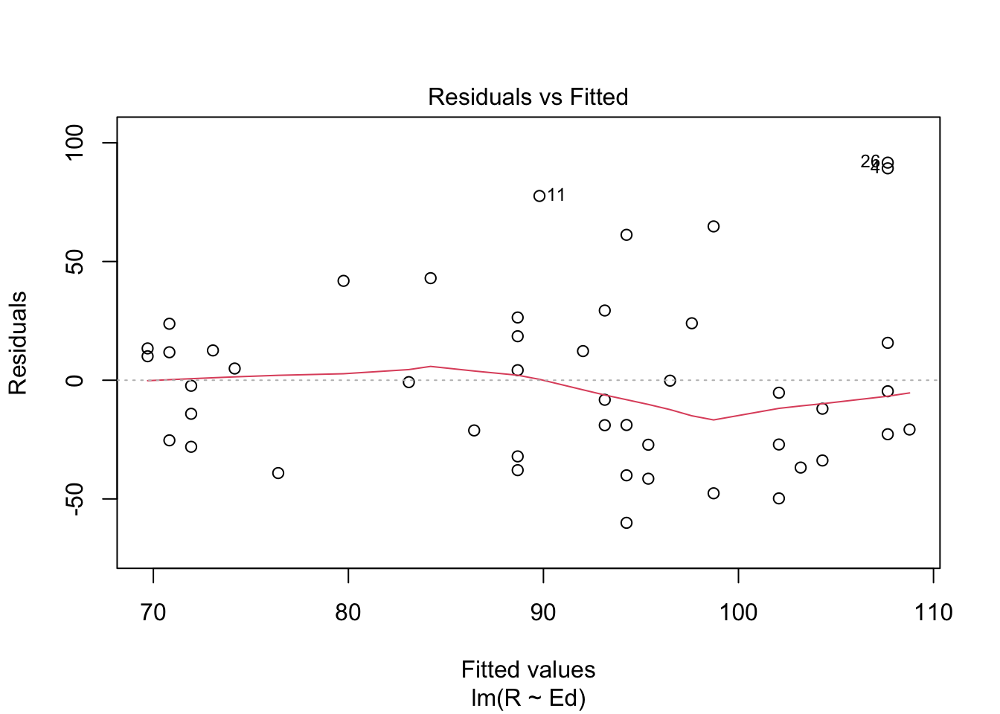
The first assumption we test is linearity. To test this, I used a residuals vs fitted plot. The red line is a scatterplot smoother and it is relatively flat. Thus, the linearity assumption is satisfied because there is no observable (non-linear) pattern/trend, meaning that the variance is relatively consistent. It possible to also use the Residuals vs x plot to test the linearity assumption.
plot(dat.crime$Ed, crime.lm$residuals, ylim = c(-75, 100), main = "Residuals vs. x",
xlab = "x, Average Education", ylab = "Residuals")
abline(h = 0, lty = "dashed")Next we consider the independence assumption. Though the independence assumption cannot be tested directly, I chose to look at the residuals vs x plot for obvious signs of clumping and other trends that would otherwise suggest non-independence. There are no observable patterns, trends, or clumping in the above plot, so the independence assumption is satisfied. Typically, you could also use a residuals vs. residuals offset or lagged by one time position plot; however, there doesn’t seem to be any time series component to this dataset, making it an invalid for this case.
plot(crime.lm, which = 3)
Now, we test for homoscedasticity (the equal variance assumption). Using a scale-location plot, we notice that the line is relatively flat, meaning that the errors have (relatively) the same variance. Thus, the homoscedasticity assumption is satisfied. You may also choose to look at a plot of the residuals vs. predicted (y hat) values to test this assumption (checking to see if there are growing or shrinking trends [i.e., “fan” shape] in the plot.) or a plot of y against x (for a visual check), but these are less sensitive approaches.
plot(crime.lm, which = 2)
Lastly, we test the normal population assumption. To test this, we use a Normal QQ Plot. This QQ plot show us that the right tail of the distribution is smaller than usual for a normal distribution (more specifically, it looks light-tailed), meaning that the normal population assumption is not satisfied.
It’s important to note that each of these assumptions are tested based on a relatively small sample. Therefore, although the first three assumptions are deemed to be satisfied, it is only because the plots looked NORMAL ENOUGH. The uncertainty with the satisfaction determinations regarding the assumptions could possibly stem from the fact the correlation is technically not strong enough to conduct a linear regression (typically, the correlation needs to be >.5 in order for a linear regression to be performed).
5. Is the relationship between reported crime and average education statistically significant? Report the estimated coefficient of the slope, the standard error, and the p-value. What does it mean for the relationship to be statistically significant?
summary(crime.lm)##
## Call:
## lm(formula = R ~ Ed, data = dat.crime)
##
## Residuals:
## Min 1Q Median 3Q Max
## -60.061 -27.125 -4.654 17.133 91.646
##
## Coefficients:
## Estimate Std. Error t value Pr(>|t|)
## (Intercept) -27.3967 51.8104 -0.529 0.5996
## Ed 1.1161 0.4878 2.288 0.0269 *
## ---
## Signif. codes: 0 '***' 0.001 '**' 0.01 '*' 0.05 '.' 0.1 ' ' 1
##
## Residual standard error: 37.01 on 45 degrees of freedom
## Multiple R-squared: 0.1042, Adjusted R-squared: 0.08432
## F-statistic: 5.236 on 1 and 45 DF, p-value: 0.02688The estimated coefficient of the slope is 1.1161. The standard error is .4878. The p-value is .0269. Given that the p-value (.0269) is less than .05, the relationship between reported crime and average education is (technically) statistically significant. However, given that the normal population assumption was not satisfied (since the QQ plot depicts a smaller distribution than normal), the statistical significance result may not be accurate (in reality, the p value may be larger, and thus, it may not actually be statistically significant). A statistically significant relationship means that the result was unlikely to have occurred due to random chance. In other words, statistical significance allows researchers to determine whether the observed relationship was truly due to the factor of interest.
7. Can you conclude that if individuals were to receive more education, then crime will be reported more often? Why or why not?
No, we cannot conclude that crime would be reported more often if individuals were to receive more education because correlation does not necessarily imply causation. There may be some confounding third variable (such as neighborhood dynamics, SES, or increased police presence) that moderates or mediates the relationship between crime reporting and education. In other words, although correlated, the respective increases may be due to some other variable rather than directly tied to the increase in the other variable.
\[\\[2in]\]
Exam 2
Instructions
Create a folder in your computer (a good place would be under Crim 250, Exams).
Download the dataset from the Canvas website (sim.data.csv) onto that folder, and save your Exam 2.Rmd file in the same folder.
Data description: This dataset provides (simulated) data about 200 police departments in one year. It contains information about the funding received by the department as well as incidents of police brutality. Suppose this dataset (sim.data.csv) was collected by researchers to answer this question: “Does having more funding in a police department lead to fewer incidents of police brutality?”
Codebook:
- funds: How much funding the police department received in that year in millions of dollars.
- po.brut: How many incidents of police brutality were reported by the department that year.
- po.dept.code: Police department code
Problem 1: EDA (10 points)
Describe the dataset and variables. Perform exploratory data analysis for the two variables of interest: funds and po.brut.
dat <- read.csv(file = "sim.data.csv")names(dat)## [1] "po.dept.code" "funds" "po.brut"dim(dat)## [1] 200 3head(dat)## po.dept.code funds po.brut
## 1 1 48.1 23
## 2 2 81.4 10
## 3 3 41.8 25
## 4 4 61.7 19
## 5 5 86.4 8
## 6 6 51.6 22summary(dat$funds)## Min. 1st Qu. Median Mean 3rd Qu. Max.
## 21.40 51.67 59.75 61.04 72.17 99.70summary(dat$po.brut)## Min. 1st Qu. Median Mean 3rd Qu. Max.
## 0.00 14.00 19.00 18.14 22.00 29.00plot(dat$funds, dat$po.brut, main = "Relationship Between Police Department Funds and Police Brutality Reports",
xlab = "Police Department Funds in That Year (in Millions of Dollars)",
ylab = "Reported Police Brutality Incidents", col = "blue")cor(dat$funds, dat$po.brut)## [1] -0.9854706There are 200 observations in this dataset (which corresponds to the 200 police departments that were included in this dataset). The variables in the data set include: (1) “po.dept.code”, which is the the police department code, (2) “funds”, which is how much funding the police department received in that year in millions of dollars, and (3) “po.brut”, which is the number of incidents of police brutality that were reported by the department in that year. The po.dept.code variable is not as interesting to look at because it is simply the police department code. For the funds variable, the the minimum value is 21.40 (million dollars) and the maximum is 99.70 (million dollars), with a mean of 61.04 (million dollars) (median is 59.75 incidents). For the po.brut variable, the min value is 0 incidents, the max value is 29 incidents, and the mean value is 18.14 incidents (median is 19 incidents). This variable is particularly surprising because would expect that, based on the constant media portrayal of police brutality issues, one would expect that there may be many more incidents in a given year (but this may also be due to the biases in using heuristics). In terms of the EDA that I chose to perform, I chose to make a scatterplot given that both variables are quantitative. As an extra analysis, I ran a correlation test in order to determine just how strong the observed correlation/relationship is. The observed correlation is -.9854706, which is a very strong correlation.
Problem 2: Linear regression (30 points)
- Perform a simple linear regression to answer the question of interest. To do this, name your linear model “reg.output” and write the summary of the regression by using “summary(reg.output)”.
reg.output <- lm(formula = po.brut ~ funds, data = dat)
summary(reg.output)##
## Call:
## lm(formula = po.brut ~ funds, data = dat)
##
## Residuals:
## Min 1Q Median 3Q Max
## -3.9433 -0.2233 0.2544 0.5952 1.1803
##
## Coefficients:
## Estimate Std. Error t value Pr(>|t|)
## (Intercept) 40.543069 0.282503 143.51 <2e-16 ***
## funds -0.367099 0.004496 -81.64 <2e-16 ***
## ---
## Signif. codes: 0 '***' 0.001 '**' 0.01 '*' 0.05 '.' 0.1 ' ' 1
##
## Residual standard error: 0.9464 on 198 degrees of freedom
## Multiple R-squared: 0.9712, Adjusted R-squared: 0.971
## F-statistic: 6666 on 1 and 198 DF, p-value: < 2.2e-16- Report the estimated coefficient, standard error, and p-value of the slope. Is the relationship between funds and incidents statistically significant? Explain.
The estimated coefficient of the slope is -.367099. The standard error is .004496. The p value of the slope is less than 2e-16 (which is the scientific notation of .0000000000000002. The relationship between funds and incidents is statistically significant because the p value (which is 2e-16) is less than .05 (level of confidence being 95%). Even if we chose the alpha value (level of significance) to be .01, the correlation is still statistically significant (because 2e-16<.001), meaning that we can state that the observed result was not due to random chance with 99% confidence. Interestingly enough, the p-value is still less than the alpha value of .001, suggesting that the possibility of this relationship being observed due to chance is less than .1%. However, I want to note that, the extent to which we can trust the observed relationship is largely based on whether the four basic assumptions are satisfied (these will be tested below), so one should not jump to conclusions and make inferences solely based on this one analysis.
- Draw a scatterplot of po.brut (y-axis) and funds (x-axis). Right below your plot command, use abline to draw the fitted regression line, like this:
plot(dat$funds, dat$po.brut, main = "Relationship Between Police Department Funds and Police Brutality Reports",
xlab = "Police Department Funds in That Year (in Millions of Dollars)",
ylab = "Reported Police Brutality Incidents", col = "blue")
abline(reg.output, col = "red", lwd = 2)Does the line look like a good fit? Why or why not?
The line does not look like a good fit because the points seem to be curved. More specifically, the data points on both ends fall far below the abline, leading me to believe that this line is not a good fit for this dataset. However, given that the curve is not very pronounced, I will still need to test the four assumptions before concluding that this is not a good model fit for the dataset.
- Are the four assumptions of linear regression satisfied? To answer this, draw the relevant plots. (Write a maximum of one sentence per assumption.) If not, what might you try to do to improve this (if you had more time)?
plot(reg.output, which = 1)
First, we test the linearity assumption. To test this, I used a residuals vs. fitted plot. In comparing the horizontal dotted line to the red line (which is a scatterplot smoother that follows the values and shows the average value of the residual at each value of fitted value), we notice that the linearity assumption is NOT satisfied. This is because the plot above suggests that there is a clear non-linear trend of residuals (the red line looks like an upside-down parabola). In other words, this tells us that the residuals are not equally varied across the entire range of fitted values (i.e., inconsistent variance).
plot(dat$funds, reg.output$residuals, main = "Residuals vs. X",
xlab = "X, Police Department Funds (in Millions)", ylab = "Residuals")
abline(h = 0, lty = "dashed")Next, we test the independence assumption. Although this assumption cannot be tested directly, I chose to look at the residuals vs. X plot for obvious signs of clumping and other trends that would otherwise suggest non-independence. There is a very clear pattern/trend (in the shape of an upside-down parabola). However, I cannot necessarily determine whether the independence assumptions is satisfied because it is unclear whether it is due to a model fit problem or an independence problem. (My personal thoughts/guess is that some of the departments may fall within the same city/general area, meaning that they are somewhat dependent/related to each other. However, we have not been given any information regarding that, so I cannot make an accurate statement regarding independence in this dataset.)
plot(reg.output, which = 3)
Next, we test for homoscedasticity (the equal variance assumption). By using a scale-location plot, we notice that there is a trend in the deviations (very close to the shape of the letter “W”). Thus, the equal variance assumption is NOT satisfied, meaning that the residuals (and errors) have a non-constant variance. To fix/improve this, we could perform a transformation of Y (this would remedy nonnormality, in turn correcting heteroscedasticity (which is the same as satisfying homoscedasticity).
plot(reg.output, which = 2)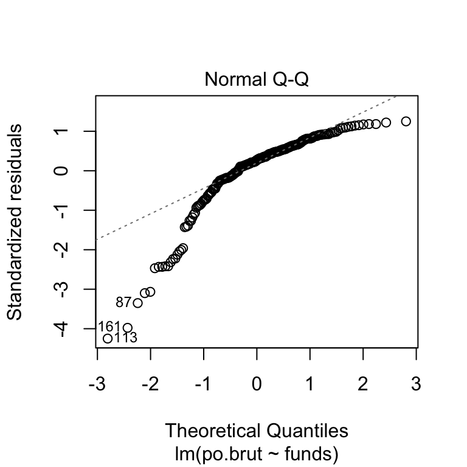
Lastly, we test the normal population assumption. To test this, I used a normal Q-Q plot. Given the plot’s shape, it is most likely that the distribution is (arguably, in my opinion, severely) left skewed because of the way that both ends curve below the line. This is particularly concerning because it may suggest that our p-values and confidence intervals are too optimistic. Thus, the normal population assumption is NOT satisfied because the residuals are not normally distributed.
Given that none of the assumptions were satisfied, we would be able to perform transformations in order to improve this. More specifically, we may be able to correct/fix the observed non-linearity by performing a transformation of X. Differently, we could perform either a logarithmic, exponential, or reciprocal transformation to fix the skewness in the population distribution that we observed. An important note here is that one does not need to perform multiple transformations; rather, it is possible that one transformation is a significant enough improvement that may lend itself to satisfying more than one assumption.
- Answer the question of interest based on your analysis.
The correct interpretation/answer to the question of interest based on my analysis is as follows: For every unit increase in funds, reports of police brutality to police departments decreased by .367099 per police department. However, an increase in police department funds DOES NOT LEAD to a reduction in reported police brutality (this statement implies causation, which IS NOT supported by this analysis). Furthermore, it is important to note that, given that all four assumptions were left unsatisfied, this regression model is likely a bad model fit for the data and the results of the analysis may be misleading or even incorrect.
Problem 3: Data ethics (10 points)
Describe the dataset. Considering our lecture on data ethics, what concerns do you have about the dataset? Once you perform your analysis to answer the question of interest using this dataset, what concerns might you have about the results?
There are multiple concerns and considerations that need to be made regarding this dataset. Firstly, it is unclear (and virtually impossible) to ensure that the record of police brutality reports is accurate. Given that the police departments reported police brutality incidents on their own (and there is no indication about whether or not this includes civilian reports of witnessed police brutality), there may be an issue of underreporting at play (overreporting is not necessarily a concern because police departments would not want to make themselves look “worse”). Furthermore, there is no discussion of exactly how the data was collected. Firstly, there may be a privacy issue, which may limit the availability of certain information. Differently, there may biases in the extent to which each department truthfully portrayed their police brutality incidents (i.e. if each department has a different “definition” of police brutality in terms of the severity of the injury, then the data would not be very accurate, making it difficult to use it to make inferences). It is also unclear whether this was a random sample of police departments or whether they were specifically chosen based on some criteria. If there were selection criteria, the dataset itself may be biased. In terms of my concerns regarding the results of this analysis, I have both statistical and ethical concerns. Firstly, given that none of the assumptions were satisfied, it suggests that this was a bad model fit. Thus, any inferences/decisions made based off of this analysis would be ungrounded. The ethical concerns that arise from the results lay within the interpretation of the data (given the bad fit of the model). Firstly, I would be hesitant to suggest that police brutality incidents and police department funding are inherently and fundamentally related. Rather, I would expect that a third variable (such as the socioeconomic/racial makeup of the jurisdictions) is responsible for the observed relationship. I would be concerned that the results of this analysis would lead departments to believe that more funding would be an effective and sufficient step towards reducing police brutality reports. However, increased funding does not speak to how exactly that funding is being allocated; if the funding is not put towards race/bias training training, then we would not necessarily observe a decrease in police brutality incidents. Furthermore, even if departments received increased funding and used those funds to increase training, I would be worried the police departments would use the results as a means of justifying not having to further investigate police brutality reports (because they might think that as long as the number of reports is decreasing, then the issues has been accurately dealt with). Overall, I believe that the results of this analysis (which are arguably based on a bad fit model) would give police departments an additional avenue of covering up or misrepresenting their stats on deparment police brutality incidents.
\[\\[2in]\]
Assignment 4 (Active Reading)
Data Visualization Reading
# install.packages('viridis') install.packages('ggrepel')
# install.packages('tidyverse')
library(tidyverse)
library(ggplot2)
library(dplyr)
data(mpg)
mpg## # A tibble: 234 × 11
## manufacturer model displ year cyl trans drv cty hwy fl class
## <chr> <chr> <dbl> <int> <int> <chr> <chr> <int> <int> <chr> <chr>
## 1 audi a4 1.8 1999 4 auto… f 18 29 p comp…
## 2 audi a4 1.8 1999 4 manu… f 21 29 p comp…
## 3 audi a4 2 2008 4 manu… f 20 31 p comp…
## 4 audi a4 2 2008 4 auto… f 21 30 p comp…
## 5 audi a4 2.8 1999 6 auto… f 16 26 p comp…
## 6 audi a4 2.8 1999 6 manu… f 18 26 p comp…
## 7 audi a4 3.1 2008 6 auto… f 18 27 p comp…
## 8 audi a4 quattro 1.8 1999 4 manu… 4 18 26 p comp…
## 9 audi a4 quattro 1.8 1999 4 auto… 4 16 25 p comp…
## 10 audi a4 quattro 2 2008 4 manu… 4 20 28 p comp…
## # … with 224 more rows`?`(mpg)In order for me to run the codes listed in the reading, I had to load the library and data. The first few lines of code are simply installing the extension packages needed to create the plots that are included later on. The library() function simply makes the package available for me to use. The second-to-last line of code (“mpg”) simply displays the dataframe.
The last line of code in this section (?mpg) provides information about the dataset. More specifically, it provides a description and the codebook. From this, we know that this data is fuel economy data for 38 different models of cars between the years 1999 and 2008. Furthermore, it tells us that the data was collected by the EPA and the models that are included are restricted to models that had new releases every year over the given period of time. Lastly, it tells us that there are 234 observations (rows) and 11 variables (columns). The variables include “manufactorer” (the manufacturer name), “model” (the model name), “displ” (the car’s engine size in litres), “year” (the year it was manufactured), “cyl” (the number of cylinders), “trans” (the type of transmission), “drv” (the type of drive; whether it is front-wheel [f], rear wheel [r], or 4 wheel drive [4]), “cty” (city miles per gallon), “hwy” (the car’s fuel efficiency on the highway in miles per gallon), “fl” (the fuel type), and “class” (the type of car). In other words, by running “?mpg” we are able to learn more about the mpg dataset.
ggplot(data = mpg) + geom_point(mapping = aes(x = displ, y = hwy))
Here, the ggplot() function creates a coordinate system using for the mpg dataset (this is the first argument in the line of code above). However, in running the first line by itself, you get an empty graph, which is why we have to add layers to the coordinate system (essentially what the second argument does). The geom_point() function adds a layer of points to the plot in order to create a scatterplot. In this example, the mapping argument is used in conjunction with aes() (which is essentially a means of constructing aesthetic mappings) to define how the specified variables are mapped to visual properties. In this case, the code maps the “displ” variable to the x axis and the “hwy” variable to the y axis.
Typically, I would add label names to the code so that the plot looks cleaner and is easier to read; however, it was not part of the reading’s code, so I left it out.
# ggplot(data = <DATA>) + <GEOM_FUNCTION>(mapping =
# aes(<MAPPINGS>))The code above simply a template that can be used to create ggplot graphs. To use this template, you replace “”, “
Exercises
ggplot(data = mpg)
dim(mpg)## [1] 234 11- By running the code above, we get an empty plot.
- There are 234 rows and 11 columns.
- The “drv” variable is the car’s type of drive. More specifically, whether it is front-wheel (denoted as f), rear wheel (denotes as r), or 4 wheel drive (denotes as 4).
- Make a scatterplot of hwy and cyl.
plot(mpg$hwy, mpg$cyl, main = "Relationship Between Fuel Efficiency on the Highway and Number of Cylinders",
xlab = "Car's Fuel Effeciency on the Highway (in miles per gallon)",
ylab = "Number of Cylinders", col = "blue")- What happens if you make a scatterplot of class vs. drv? Why is this plot not useful?
The scatterplot of class vs drv is not useful because scatterplots are used to show the relationship between 2 quantitative variables. Given that both of the given variables in this example (class and drv) are categorical, this scatterplot provides us with no information. (I chose not to include the code here because it is literally a blank plot)
ggplot(data = mpg) + geom_point(mapping = aes(x = displ, y = hwy,
color = class))
This chunk adds the color parameter in geom_point, essentially assigning a color to each variable option within class (for instance, “suv” is pink while “midsize” is dark green). In mapping the class variable to the color aesthetic, it allows for a better representation of a third variable in the plot.
ggplot(data = mpg) + geom_point(mapping = aes(x = displ, y = hwy,
size = class))
There are many ways to map a third variable onto this plot. In this case, we can mapp class to the size aesthetic, in which each variable option is a different size, as depicted above. However, size is not a good option for discrete variable.
# Left
ggplot(data = mpg) + geom_point(mapping = aes(x = displ, y = hwy,
alpha = class))# Right
ggplot(data = mpg) + geom_point(mapping = aes(x = displ, y = hwy,
shape = class))
The difference between the two plots above is the type of aesthetic that is used. In the first plot, “alpha” is used, in which the point’s transparency is dependent on the class. In the second plot, the shape aesthetic is used, in which each class has a different shape of point on the plot (which is outlined in the legend).
ggplot(data = mpg) + geom_point(mapping = aes(x = displ, y = hwy),
color = "blue")
This code creates the same ggplot, but instead manually assigns the points the color blue (effectively overriding the gray/black default).
ggplot(data = mpg) + geom_point(mapping = aes(x = displ, y = hwy,
color = "blue"))
The reason why the points are not blue is because “color=” is inside the aes() function. If “color=”blue"" is inside of the aes() function, then you essentially are telling it to sort. However, in order to turn the point blue, it needs to be independent (outside) of the aes() function.
# ggplot(data = mpg) + geom_point(mapping = aes(x = displ,
# y = hwy))The reason this is a bad code is because “+” is on the next line when it should be on the same line as the very first line of code.
ggplot(data = mpg) + geom_point(mapping = aes(x = displ, y = hwy)) +
facet_wrap(~class, nrow = 2)
The important line of code here is “facet_wrap()”. This allows you to split the plot into subplots (which is a particularly good was to display categorical variables). “~” is the argument that allows you to create a formula using the variable name of interest (in this case, it is “class”). Next, nrow allows you to state how many rows you would like the subplots to take up (here, all of the subplots are displayed within 2 rows).
ggplot(data = mpg) + geom_point(mapping = aes(x = displ, y = hwy)) +
facet_grid(drv ~ cyl)
Differently, facet_grid() facets the plot on a combination of variables (the variable names are separated by a “~”). If you wanted to, you could also use “+ facet_grid(.~cyl)” in order to NOT facet in the rows or columns dimension by strategically placing the “.” where you don’t want to facet.
ggplot(data = mpg) + geom_point(mapping = aes(x = drv, y = cyl))
The empty cells in this plot means that there are not datapoints that share the given combination of variables.
ggplot(data = mpg) + geom_point(mapping = aes(x = displ, y = hwy)) +
facet_grid(drv ~ .)
ggplot(data = mpg) + geom_point(mapping = aes(x = displ, y = hwy)) +
facet_grid(. ~ cyl)
The first code makes a plot that is not faceted in the rows dimension. The second code makes a plot that is not faceted in the columns dimension (essentially, ggplot creates an nx1 or 1xn grid). The “.” is used to denote with dimension we do not want to be faceted.
ggplot(data = mpg) + geom_point(mapping = aes(x = displ, y = hwy)) +
facet_wrap(~class, nrow = 2)
This code shows that the facets will be based on the class variable. In this case, the major advantage of using faceting instead of the color aesthetic is that, given that there are so many datapoints, the colors would overlap and possibly not be as clear as you would have intended/hoped. However, a clear disadvanatge is that you cannot compare each of these subplots as well as you could be able to compare the points if they were on one plot. If you had a larger dataset, the balance would remain the same given that the colored points would be even more indistinguishable (given that they would be closer to each other). However, with a smaller dataset, the colour aesthetic would be a lot better because it would clearly display all of the points in such a way that makes comparison easy.
# left
ggplot(data = mpg) + geom_point(mapping = aes(x = displ, y = hwy))
# right
ggplot(data = mpg) + geom_smooth(mapping = aes(x = displ, y = hwy))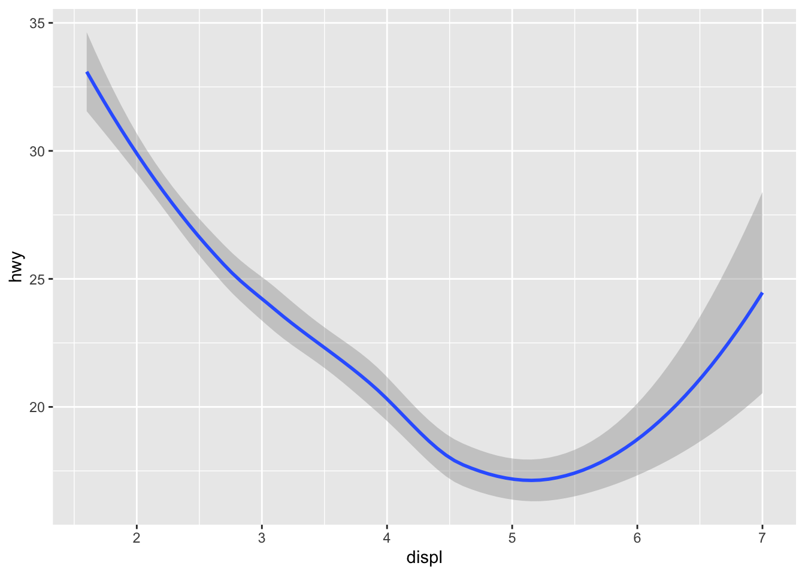
The first ggplot effectively layers a scatterplot by using geom_point(). Meanwhile, the second ggplot creates a a smooth curve that is fitted to the selected data by using geom_smooth().
ggplot(data = mpg) + geom_smooth(mapping = aes(x = displ, y = hwy,
linetype = drv))The argument of interest here is “linetype”. By setting the linetype to the variable, you effectively draw a new line (or a different linetype) for each value of the variable (sometimes, I personally refer to this as variable option).
ggplot(data = mpg) + geom_smooth(mapping = aes(x = displ, y = hwy))
ggplot(data = mpg) + geom_smooth(mapping = aes(x = displ, y = hwy,
group = drv))ggplot(data = mpg) + geom_smooth(mapping = aes(x = displ, y = hwy,
color = drv), show.legend = FALSE)The first ggplot here simply displays a smooth line/curve that is fit the the x and y values. The second ggplot utilizes the group function to display a different smooth curve for each unique value of the selected variable (the argument of interest here is “group”). Lastly, the third type adds onto the second ggplot by assigning different colors to each of the smooth curves (the argument of interest here is “color”), making them easier to distinguish from each other. Also, it is important to note the the third ggplot’s code also denotes that it wants the legend to be suppressed.
ggplot(data = mpg) + geom_point(mapping = aes(x = displ, y = hwy)) +
geom_smooth(mapping = aes(x = displ, y = hwy))
This chunk simply shows that it is possible to display multipel geoms in a single plot. Reminder that this is possible because ggplot works by providing a plot in which things can be layered ontop of it to produce plots of meaning. These two specific geoms layer a scatterplot and a smoothed line/curve plot.
ggplot(data = mpg, mapping = aes(x = displ, y = hwy)) + geom_point() +
geom_smooth()
This code simply shows that it is possible to share x and y axes for both plots. In order to not forget about changes that have been made and having to update the individual arguments, you can include this information in the first ggplot code line such that it would be used by default for all mappings (unless specifically overridden). Given that the instructions/parameters are included in the first line, they are automatically applied to the other lines, making it more user friendly in the case of needing to copy and paste the code for different purposes/analyses.
ggplot(data = mpg, mapping = aes(x = displ, y = hwy)) + geom_point(mapping = aes(color = class)) +
geom_smooth()In this code, we see that there are additional arguments in the second line of code. Essentially, what this is doing is overriding the original instructions/parameters that were specified in the first line of code.
ggplot(data = mpg, mapping = aes(x = displ, y = hwy)) + geom_point(mapping = aes(color = class)) +
geom_smooth(data = filter(mpg, class == "subcompact"), se = FALSE)
The filter function, which is discussed later, is used to isolate the subcompact car class in the geom_smooth layer. Thus, the overall argument in the first line is only overridden in this one layer because it is within the layer’s (). Thus, the smooth line is only created for the one value of the class variable and not for the others.
ggplot(data = mpg, mapping = aes(x = displ, y = hwy, color = drv)) +
geom_point() + geom_smooth(se = FALSE)
This followed my predictions. It depicts a scatterplot of displ (x axis) vs. hwy ( y axis) along with each point being colored based on it’s classification within the crv variable. se=FALSE states that the error should not be displayed. Furthermore, the mapping instructions in the first line are utilized for the other lines.
ggplot(data = mpg, mapping = aes(x = displ, y = hwy)) + geom_point() +
geom_smooth()
ggplot() + geom_point(data = mpg, mapping = aes(x = displ, y = hwy)) +
geom_smooth(data = mpg, mapping = aes(x = displ, y = hwy))**The two graphs look the same because the first one s88ets general mapping instructions that are applied to each layer whereas the second ggplot rewrites the same instructions for each layer (pretty repetitive!).
ggplot(data = diamonds) + geom_bar(mapping = aes(x = cut))
This code tells ggplot to create a bar graph with the diamonds dataset with the cut of the diamond on the x axis.
ggplot(data = diamonds) + stat_count(mapping = aes(x = cut))
This is here to show that stat_count() and geom_bar() are often used interchangeably (i.e. they create the exact same plot). This is because each stat has a default geom and each geom has a default stat.
demo <- tribble(~cut, ~freq, "Fair", 1610, "Good", 4906, "Very Good",
12082, "Premium", 13791, "Ideal", 21551)
ggplot(data = demo) + geom_bar(mapping = aes(x = cut, y = freq),
stat = "identity")
This chunk displays how the default pairing between stat and geom is overridden. Instead of dispalying how many times the cut appears, it actually measured by another factor that has been labeled “identity” in this exercise. Here, the high of the bars is related to the raw value of the y variable.
ggplot(data = diamonds) + geom_bar(mapping = aes(x = cut, y = stat(prop),
group = 1))
Another way to override the defualt mapping is by displaying proportion instead of count. Here, this is denoted by the code argument “y = stat(prop)”.
ggplot(data = diamonds) + stat_summary(mapping = aes(x = cut,
y = depth), fun.min = min, fun.max = max, fun = median)
Here, stat_summary is being used to draw attention to the statistical transformation, allowing for a better plot representation by including the min, max, and median values.
ggplot(data = diamonds) + geom_bar(mapping = aes(x = cut, y = after_stat(prop)))
ggplot(data = diamonds) + geom_bar(mapping = aes(x = cut, fill = color,
y = after_stat(prop)))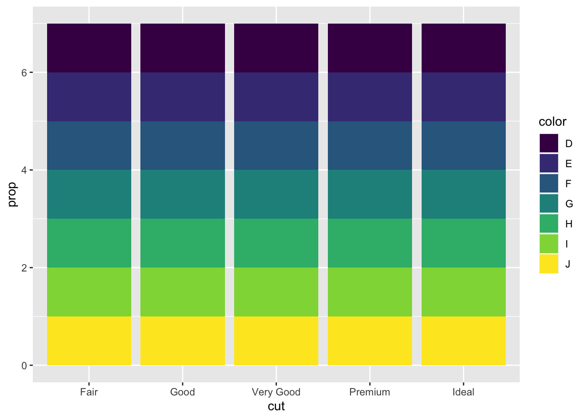
The problem with these graphs is that they did not set group=1. Because of this, they display each of the bars as completely full, which is not valid (because it doesn’t portray the true proportion).
ggplot(data = diamonds) + geom_bar(mapping = aes(x = cut, colour = cut))ggplot(data = diamonds) + geom_bar(mapping = aes(x = cut, fill = cut))
Here, “colour” and “fill” are being used to assign different colors to each bar in the bar chart. Here, we assign the aes() colour and/or fill arguments to the variable cut to denote that we want to unique values of cut to be distinguishable by color.
ggplot(data = diamonds) + geom_bar(mapping = aes(x = cut, fill = clarity))
By assigning fill to “clarity”, it fills in the bar with different colors based on the clarity value for each of the observations with that specific cut. Essentially, this creates a stacked bar plot .
ggplot(data = diamonds, mapping = aes(x = cut, fill = clarity)) +
geom_bar(alpha = 1/5, position = "identity")
ggplot(data = diamonds, mapping = aes(x = cut, colour = clarity)) +
geom_bar(fill = NA, position = "identity")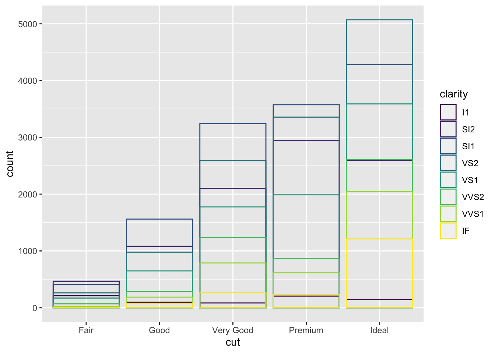
In this chunk of code, “identity” is used to ensure that the program does NOT display a stacked bar plot.
ggplot(data = diamonds) + geom_bar(mapping = aes(x = cut, fill = clarity),
position = "fill")
In this chunk of code, fill is also being used to avoid a stacked bar plot. However, this also makes each of the bars the same height, alloweing for a more direct comparison between the three variables of interest.
ggplot(data = diamonds) + geom_bar(mapping = aes(x = cut, fill = clarity),
position = "dodge")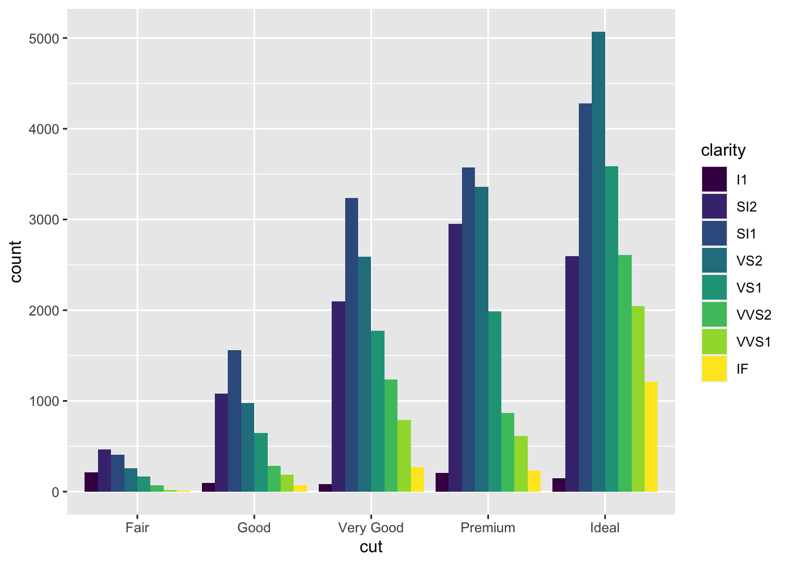
The “dodge” argument in this line of code places overlapping objects next to each other rather than on top of each other, making it easier to compare individual values. Thus, it creates a side-by-side bar plot.
ggplot(data = mpg) + geom_point(mapping = aes(x = displ, y = hwy),
position = "jitter")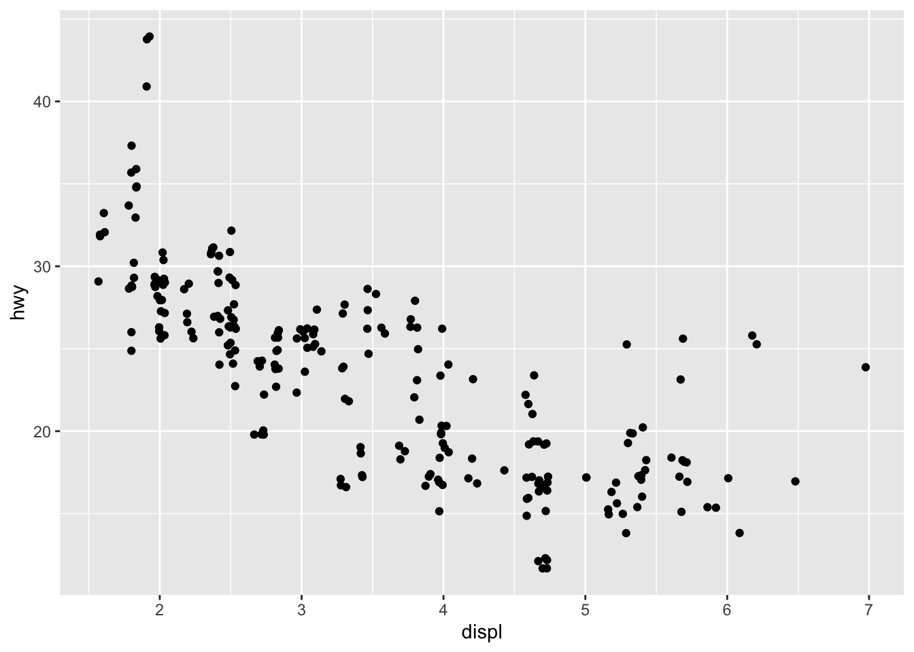
**The “position=jitter” argument essentially adds some random noise to each point such that they are spread apart.
ggplot(data = mpg, mapping = aes(x = cty, y = hwy)) + geom_point()
Given that this is a scatterplot, we could use position=“jitter” to improve the plot. Right now, the points are relatively close to each other; thus, small amounts of noise being added to each point may allow us to infer something regarding the general public.
ggplot(data = mpg, mapping = aes(x = class, y = hwy)) + geom_boxplot()
ggplot(data = mpg, mapping = aes(x = class, y = hwy)) + geom_boxplot() +
coord_flip()
This combination of ggplot codes is interesting because it plots the first one and then simply flips the axes for the second plot, but all other arguments are exactly the same. Sometimes, it is especially useful to flip the coordinate system/axes so that long axis titles are on the horizontal axis.
nz <- map_data("nz")
ggplot(nz, aes(long, lat, group = group)) + geom_polygon(fill = "white",
colour = "black")
ggplot(nz, aes(long, lat, group = group)) + geom_polygon(fill = "white",
colour = "black") + coord_quickmap()
The coord_quickmap() function selects the correst ratio for maps such that the layer looks more accurate in relation to what you observe in each life.
bar <- ggplot(data = diamonds) + geom_bar(mapping = aes(x = cut,
fill = cut), show.legend = FALSE, width = 1) + theme(aspect.ratio = 1) +
labs(x = NULL, y = NULL)
bar + coord_flip()
bar + coord_polar()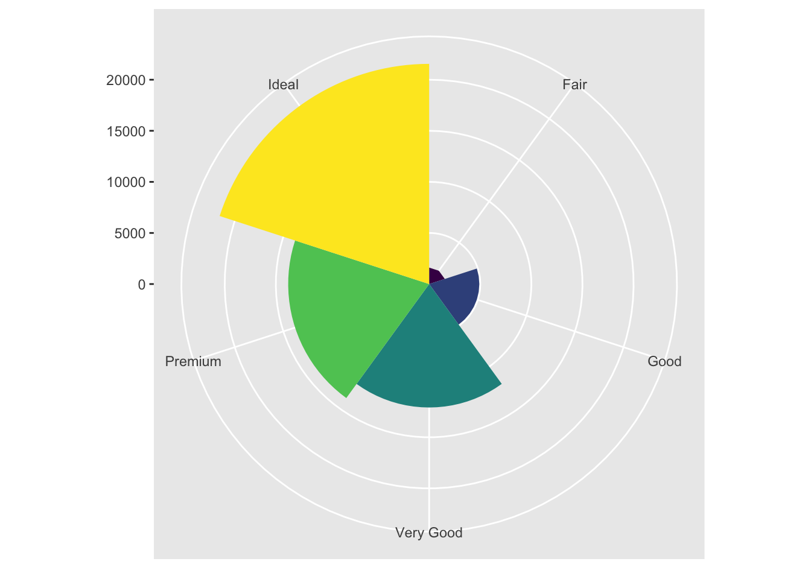
Many of these above parameters will be discussed in greater detail in the later portion of this assignment. However, the important line of code here is the very last line, which essentially just describes the fact that the ggplot will be created using polar coordinates instead.
ggplot(data = mpg, mapping = aes(x = cty, y = hwy)) + geom_point() +
geom_abline() + coord_fixed()
In this code, the most important parameter is “coord_fixed” which means that the ratio of the length on the x and y axis were reverted back to the default ratio of 1 to 1. Geom_abline () creates a layer with a line that is fit to the data (reference line) in the other layers.
# ggplot(data = <DATA>) + <GEOM_FUNCTION>( mapping =
# aes(<MAPPINGS>), stat = <STAT>, position = <POSITION> ) +
# <COORDINATE_FUNCTION> + <FACET_FUNCTION>This is a code template that can be used to create more intricate and specific ggplots. The seven parameters (which are denoted by <>) should be filled in based on what you are interested in displaying a plot about. It also highlights these as some of the more important parameters that go into the grammar of graphics. This template can be used to create an aesthetic plot of your choice.
Graphics for Communication Reading
ggplot(mpg, aes(displ, hwy)) + geom_point(aes(color = class)) +
geom_smooth(se = FALSE) + labs(title = "Fuel efficiency generally decreases with engine size",
subtitle = "Two seaters (sports cars) are an exception because of their light weight",
caption = "Data from fueleconomy.gov", x = "Engine displacement (L)",
y = "Highway fuel economy (mpg)", colour = "Car type")NOTE: I combined the codes that were included in the reading so that they can be discussed together instead of having to replot them each time). The first line of code here simply creates the ggplot using mpg as the dataset and displ and hwy as the variables that are layered onto the created plot. The second line makes it so that each class (a third variable of interest) is given its own color, making the points more distinguishable and such that the three variables are clearly displayed in relation to each other. The third line of code is a smoothed conditional means argument. What this does is it makes it easier to see patterns when there is overplotting. The “se=FALSE” portion of this line essentially indicates that the confidence interval around smooth should not be displayed. The last line couple lines of code (which relate to the labs() function) allow you to create labels for the plot. In this case, it gives the graph a main title, a subtitle (which gives additional details directly beneath the main title), a caption (which describes the data source), and more specific axis and key labels/titles (i.e., short variable names are replaced with their descriptions and units such that the plot is readable and understandable without more information).
df <- tibble(x = runif(10), y = runif(10))
ggplot(df, aes(x, y)) + geom_point() + labs(x = quote(sum(x[i]^2,
i == 1, n)), y = quote(alpha + beta + frac(delta, theta)))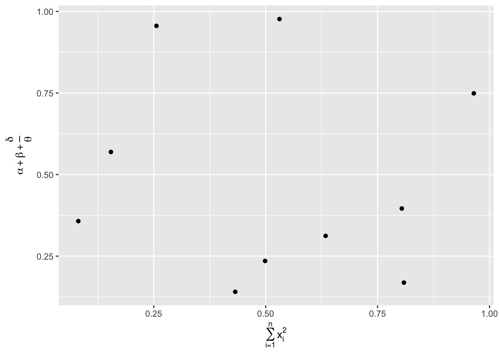
The first portion of this code is simply loading the x and y values into a datafram that can be used for the ggplot plot. The next line of code does exactly as discussed before, but now instead of using the dataset “mpg”, we are using the x and y values that were put into the dataframe (df) to plot points. The label portion of this code allows you to create mathematical equations rather than including words/text by using “quote” instead of quotation marks.
best_in_class <- mpg %>%
group_by(class) %>%
filter(row_number(desc(hwy)) == 1)
ggplot(mpg, aes(displ, hwy)) + geom_point(aes(colour = class)) +
geom_text(aes(label = model), data = best_in_class)
The first couple lines of code essentially identifies with car is the most efficient in each class and puts it into “best_in_class”. Then, by using the same general ggplot code that we’ve discusses thus far, we add the geo_text() layer which will label the “best_in_class” cars and display them on the plot.
ggplot(mpg, aes(displ, hwy)) + geom_point(aes(colour = class)) +
geom_label(aes(label = model), data = best_in_class, nudge_y = 2,
alpha = 0.5)This chunk does the same as the above code chunk, but it utilizes geom_label instead of geom_text. Geom_label is sometimes the better choice because it puts the text within a rectangle and raises it slightly above the corresponding point, making it slightly more visible and clean-looking. However, you will notice that this is still not a perfect plot because the two labels in the top left corner are directly ontop of each other, making them ineligible; this will be fixed in the next chunk.
ggplot(mpg, aes(displ, hwy)) + geom_point(aes(colour = class)) +
geom_point(size = 3, shape = 1, data = best_in_class) + ggrepel::geom_label_repel(aes(label = model),
data = best_in_class)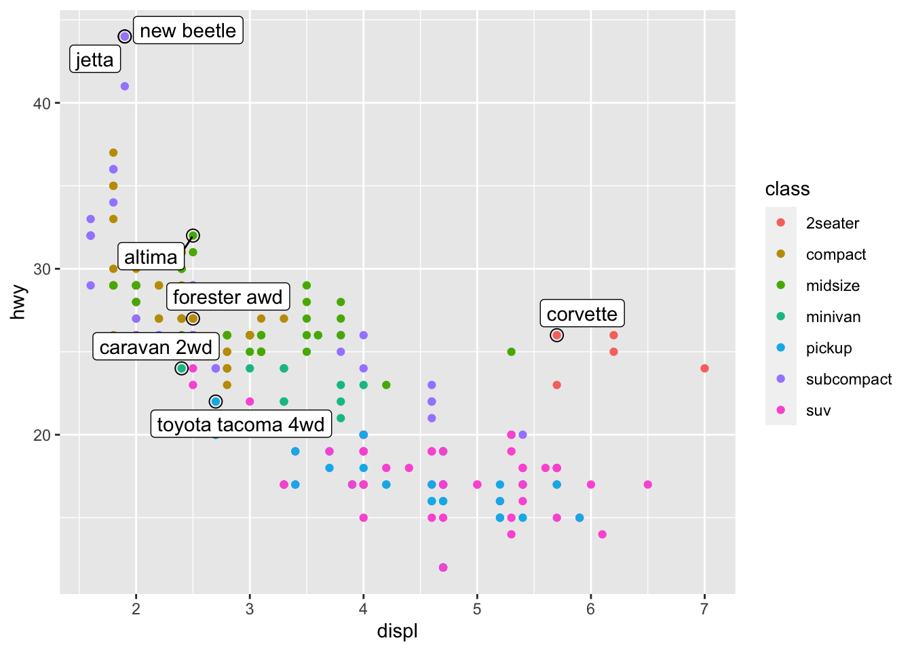
The only difference between this chunk of code and the chunk above is the use of the ggrepel package. By using this package, it adjusts the labels such that they won’t overlap, adding a black line connecting the label to the point in instances in which labels are too close together. Furthermore, this addition to this code creates a bolded circle highlight around the point of interest, making it even clearer which label is referring to which point on the plot.
class_avg <- mpg %>%
group_by(class) %>%
summarise(displ = median(displ), hwy = median(hwy))
ggplot(mpg, aes(displ, hwy, colour = class)) + ggrepel::geom_label_repel(aes(label = class),
data = class_avg, size = 6, label.size = 0, segment.color = NA) +
geom_point() + theme(legend.position = "none")
Once again, there is only a slight adjustment to this string of code (other than assignment a size, label.siz, and segment color, but these are each pretty self-explanatory). The very last line of code completely gets ride of the legend, making it so that the class names are displayed on the plot with the points in the same color as the points themselves. This is arguably not the cleanest representation of this data, but it may be useful for plots of other datasets.
label <- mpg %>%
summarise(displ = max(displ), hwy = max(hwy), label = "Increasing engine size is \nrelated to decreasing fuel economy.")
ggplot(mpg, aes(displ, hwy)) + geom_point() + geom_text(aes(label = label),
data = label, vjust = "top", hjust = "right")In this code, we create a new dataframe by summarizing the maximum and minumum values of x and y. The later portion of this code essentially allows you to choose where you would like your label/text to appear on the plot. In this case, the code wants to title to appear in the top right corner of the screen, so the summarize() function was useful in ensuring that the text does not cover up any datapoints, making them not visible and, in effect, making it a poor/ineffecitve plot. It is important to note that, in the last line of code, “vjust” refers to the vertical adjustment made to the location of the label whereas “hjust” refers to the horizontal adjustment.
label <- tibble(displ = Inf, hwy = Inf, label = "Increasing engine size is \nrelated to decreasing fuel economy.")
ggplot(mpg, aes(displ, hwy)) + geom_point() + geom_text(aes(label = label),
data = label, vjust = "top", hjust = "right")
The first portion of this code creates the label that is used in the later half (one that we’ve already discussed above). “Inf” essentially tells the program to place the label flush with the borders of the plot. The “/n” that you see in the label text denotes where you want to sentence/text to cut to the next line.
"Increasing engine size is related to decreasing fuel economy." %>%
stringr::str_wrap(width = 40) %>%
writeLines()## Increasing engine size is related to
## decreasing fuel economy.# > Increasing engine size is related to > decreasing fuel
# economy.Similar to the use of “/n” above, we can also use the stringr::str_wrap() code to automatically add line breaks after a specified number of characters (in this case, after 40 characters, the label continues on the next line).
ggplot(mpg, aes(displ, hwy)) + geom_point(aes(colour = class))
# Just to show that the above code is the same as the one
# below this line...proving that ggplot2 adds scales
# automatically when they are not specified.
ggplot(mpg, aes(displ, hwy)) + geom_point(aes(colour = class)) +
scale_x_continuous() + scale_y_continuous() + scale_colour_discrete()
**It is important to note here that, when specifying the scale, "_" must be used to specify the name of the aesthetic and the name of the scale. The default r scales are named based on the variable type (i.e. continuous, discrete, datetime, or date). There are also non-default scales that will be shown later in the assignment. **
ggplot(mpg, aes(displ, hwy)) + geom_point() + scale_y_continuous(breaks = seq(15,
40, by = 5))
For instance, here, the scale denotes that the y axis scale will run from 15 to 40, and every 5 will be labeled (essentially, there will be tick marks every 5 numbers).
ggplot(mpg, aes(displ, hwy)) + geom_point() + scale_x_continuous(labels = NULL) +
scale_y_continuous(labels = NULL)
By setting the scale to “NULL”, we remove the entire label. (This is typically used when plots are used for exact numbers that cannot be published).
presidential %>%
mutate(id = 33 + row_number()) %>%
ggplot(aes(start, id)) + geom_point() + geom_segment(aes(xend = end,
yend = id)) + scale_x_date(NULL, breaks = presidential$start,
date_labels = "'%y")
This plot uses an interesting set up in order to plot the years in which each US president was in office. By using “scale_x_date”, we are able to note that the x value is meant to display the range of years, by denoting the presidential state date and the end date, creating the dots following by lines that correspond to the years.
base <- ggplot(mpg, aes(displ, hwy)) + geom_point(aes(colour = class))
base + theme(legend.position = "left")
base + theme(legend.position = "top")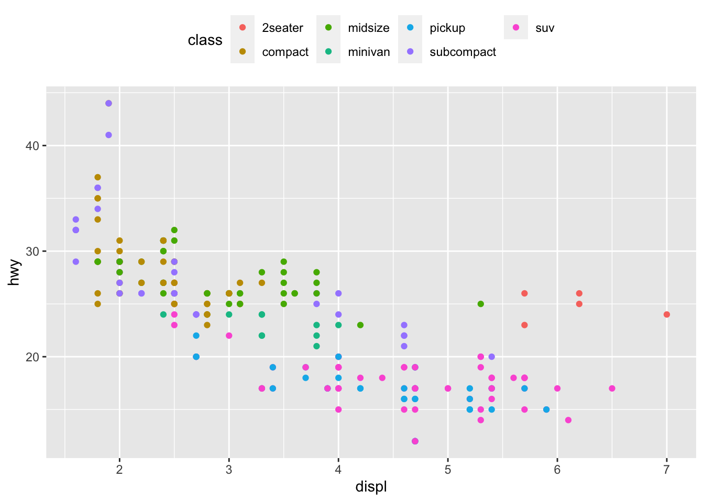
base + theme(legend.position = "bottom")
base + theme(legend.position = "right")
base + theme(legend.position = "none")The base code here simply lots the plot and data that is used. The last 4 lines of code show the possible legend layouts. The first one has the legend positioned to the left, the second one has the legend positioned at the top, the third has the legend at the bottom, and the fourth has the legend positioned on the right. The fourth option is the default, but each of these legend layout themes are appropriate for representation. I added the very last line of code to show how including “legend.position =”none" will entirely suppress the legend, making it unviewable on the plot.
ggplot(mpg, aes(displ, hwy)) + geom_point(aes(colour = class)) +
geom_smooth(se = FALSE) + theme(legend.position = "bottom") +
guides(colour = guide_legend(nrow = 1, override.aes = list(size = 4)))
The key element in this chunk of code that needs to be discussed relates to the very last line (pertaining to guides()). Nrow allows us to indicate how many rows we want to legend to take up (in this case, just 1). Furthermore, the override.aes() function allows us to change the size of the legend dots in order to display them larger for ease of readability.
ggplot(diamonds, aes(carat, price)) + geom_bin2d()
ggplot(diamonds, aes(log10(carat), log10(price))) + geom_bin2d()
This chunk of code simply shows how adding a log transformation to the ggplot code can produce a more recognizable relationship. However, the issue here is that the log function used in the transformation in included in the axis label. This will be corrected in the next section
ggplot(diamonds, aes(carat, price)) + geom_bin2d() + scale_x_log10() +
scale_y_log10()
Here, you’ll notice that the transformation is made in the scale, rather than the the aesthetic mapping, allowing us to keep the original axis labels.
ggplot(mpg, aes(displ, hwy)) + geom_point(aes(color = drv))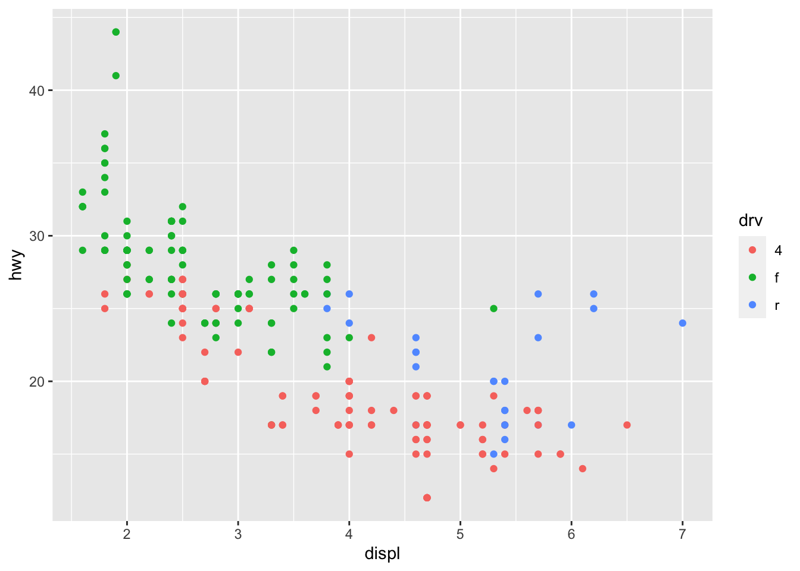
ggplot(mpg, aes(displ, hwy)) + geom_point(aes(color = drv)) +
scale_colour_brewer(palette = "Set1")
The difference between these two plots is the addition of the “scale_colour_brewer” clause, which essentially picks a set of colours that are not necessarily evenly distributed across the colour wheel. Choosing sets wisely is very helpful because it allows for individuals with common types of color blindness to distinguish between the colors included in the plot.
ggplot(mpg, aes(displ, hwy)) + geom_point(aes(color = drv, shape = drv)) +
scale_colour_brewer(palette = "Set1")
The addition to this line of code is the distinction of a shape that is also included in the legend. This allows for 2 types of distinctions between data point types (i.e., not only can they be distinguished from each other by color, but if someone has a form of colorblindness that still makes it difficult to notice differences, they can rely on the difference in shape). It is interesting to note that the use of the shape mapping technique would allow for distinction between data point even in the absense of color (i.e., when the plot is in black and white).
presidential %>%
mutate(id = 33 + row_number()) %>%
ggplot(aes(start, id, colour = party)) + geom_point() + geom_segment(aes(xend = end,
yend = id)) + scale_colour_manual(values = c(Republican = "red",
Democratic = "blue"))
Similarly, we can use “scale_colour_manual” for predefined values and colors. In this case, you can assign “Republican” and “Democrat” to red and blue, respectively (as they are commonly understood in US politics).
df <- tibble(x = rnorm(10000), y = rnorm(10000))
ggplot(df, aes(x, y)) + geom_hex() + coord_fixed()
ggplot(df, aes(x, y)) + geom_hex() + viridis::scale_fill_viridis() +
coord_fixed()
The code above first creates a dataframe for vectors of x and y of 10000 that are normally distributed. Then, a ggplot is creating layering this dataframe on the plot. The first ggplot code simply creates a hexogonal field where the values are assigned to different shades of blue. In the second ggplot code, the viridis package is used to create a gradient of different colors are are more easily distinguished from each other.
ggplot(df, aes(x, y)) + geom_hex() + scale_colour_gradient(low = "white",
high = "red") + coord_fixed()
This code doesn’t override the default scale because we did not provide a scale ourselves.
ggplot(mpg, mapping = aes(displ, hwy)) + geom_point(aes(color = class)) +
geom_smooth() + coord_cartesian(xlim = c(5, 7), ylim = c(10,
30))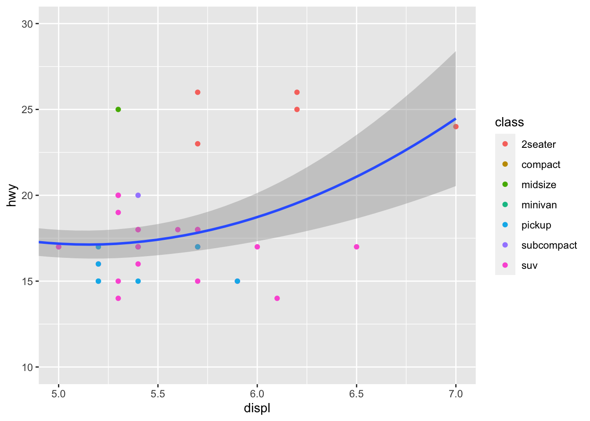
mpg %>%
filter(displ >= 5, displ <= 7, hwy >= 10, hwy <= 30) %>%
ggplot(aes(displ, hwy)) + geom_point(aes(color = class)) +
geom_smooth()In comparing the 2 plots above, we notice that, by including “coord_cartesian” instead of simply changing the display filter, we get a plot whose smooth curve is far less choppy. Essentially, the coord_cartesian code allows us to zoom in on a region of a plot without losing the smooth fit of the larger (un-zoomed) plot’s curve.
suv <- mpg %>%
filter(class == "suv")
compact <- mpg %>%
filter(class == "compact")
ggplot(suv, aes(displ, hwy, colour = drv)) + geom_point()
ggplot(compact, aes(displ, hwy, colour = drv)) + geom_point()
x_scale <- scale_x_continuous(limits = range(mpg$displ))
y_scale <- scale_y_continuous(limits = range(mpg$hwy))
col_scale <- scale_colour_discrete(limits = unique(mpg$drv))
ggplot(suv, aes(displ, hwy, colour = drv)) + geom_point() + x_scale +
y_scale + col_scale
ggplot(compact, aes(displ, hwy, colour = drv)) + geom_point() +
x_scale + y_scale + col_scale
The first two plots here are simply used to show that it is difficult to compare when plots do not share the same axis limits. Thus, we use “scale_x_continuous” and “scale_y_continuous” to define ranges that can be used for both plots in order to extract similarities and differences. Thus the code for the last two plots simply include the created x_scale and y_scale as a parameter in the function.
ggplot(mpg, aes(displ, hwy)) + geom_point(aes(color = class)) +
geom_smooth(se = FALSE) + theme_bw()
The important piece of this code is the last line; we use theme_bw() to state that we want the ggplot to appear with a white background with grid lines.
ggsave("my-plot.pdf")This code saves the ggplot of interest as a pdf, with the name “my-plot”. The image saved in this case is 7 in by 7 in. However, you can specify the width and height if you do not want to simply take the dimensions of the plotting device itself.